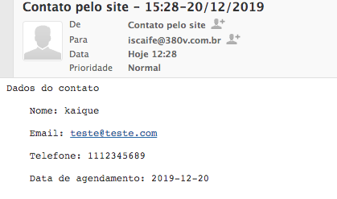

1 - OUTRAS LINGUAS - NÃO FUNICIONAM
2 - TIRE SUAS DUVIDAS É PRA COLOCAR SOBRE HoLEP e cirurgia robotica, acho que esse tire suas duvidas deve ser colocado no final da pagina, lá em baixo.
Dúvidas ja está no final da página
3 - O CHAT AINDA ACHO QUE DEVE FICAR MAS PARA MANDAREM DUVIDAS A RESPEITO DAS CIRURGIAS, FILTRAR UM POUCO, NÃO ACHO QUE SEJA O FOCO DO SITE.
O chat está no site como um geral, nao conseguimos filtrar o que as pessoas irão mandar
4 - Em cima dos telefones colocar: CONSULTÓRIO E AGENDAMENTO. ATENÇAO O FOCO É O PACIENTE LIGAR NO CONSULTORIO OU MANDAR EMAIL, CHATS E DUVIDAS NAO SAO O FOCO.
No menu, caso adicionemos escrtita, pode gerar uma quebra no layout que não ficará bom
5 - Email: ESTÁ TUDO ERRADO, OU VAI PRA EMAIL ERRADO, OU VAI PRA NENHUM, ISSO ESTA EM DIVERSAS PARTES DO SITE.

Todos os formulários do site estão sendo enviados para o E-mail : contato@iscaife.com.br
Esste E-mail ja foi configurado no celular do Dr.
No anexo está sendo apresentado os emails ja recebidos pelo site
Segundo print é um email ja enviado para teste
6 - CONTATO - ESTA ERRADO, DEVE DIRECIONAR PARA PAGINA COM TELEFONES, ENDEREÇO, MAPA DE COMO CHEGAR, EMAIL, WHATSAPP.
Ja foi criado uma nova página de contato
7 - AGENDAR CONSULTA EM OUTROS LOCAIS DO SITE ESTA COM ERRO TAMBEM, ESSE AGENDAR TAMBEM PRECISA SER MUDADO, TEM QUE ABRIR UMA CAIXA PARA LIGAR NO CONSULTORIO, OU MANDAR EMAIL COM UMA MSG DE QUE LIGAREMOS A SEGUIR PARA FAZER O AGENDAMENTO.
O formulário de agendamento está distribuido no site inteiro com os mesmos dizeres e campos.
Todas as informações estão sendo enviadas para o email: contato@iscaife.com.br
8 - FAZER AS MUDANÇAS QUE ACABEI DE MANDAR NO EMAIL DA GRAH.

Ja foi realizado as alterações
9 - CADE O BLOG???
O blog será adicionado quando ja tivermos algumas matérias para subir e poder alimentar de conteúdo
10 - NAO É ANUCLEAÇAO É ENUCLEAÇAO.
Ja alterado para o correto
11 - OS LINKS SABER MAIS DE CIRURGIA ESTAO COM TEXTO ERRADO, QUANDO CLICA EM CIRURGIA ROBOTICA O TITULO ESTA CIRURGIA PARA HPB, ESTA ERRADO.
Clicando em "ler mais" no item (CIRURGIA ROBÓTICA PARA O CÂNCER DE PRÓSTATA) ele abre a página corretamente com título de acordo
12 - TEXTOS DENTRO DOS LINKS ESTAO COM FORMATAÇAO PESSIMA, VER LER MAIS HOLEP POR EXEMPLO.
O chat está no site como um geral, nao conseguimos filtrar o que as pessoas irão mandar
13 - NENHUM AGENDE CONSULTA FUNCIONA DIREITO, ISSO TEM QUE SER DIRECIONADO PARA TELEFONES E EMAIL
Foi efetuado um teste de envio de agendamento e foi corretamente